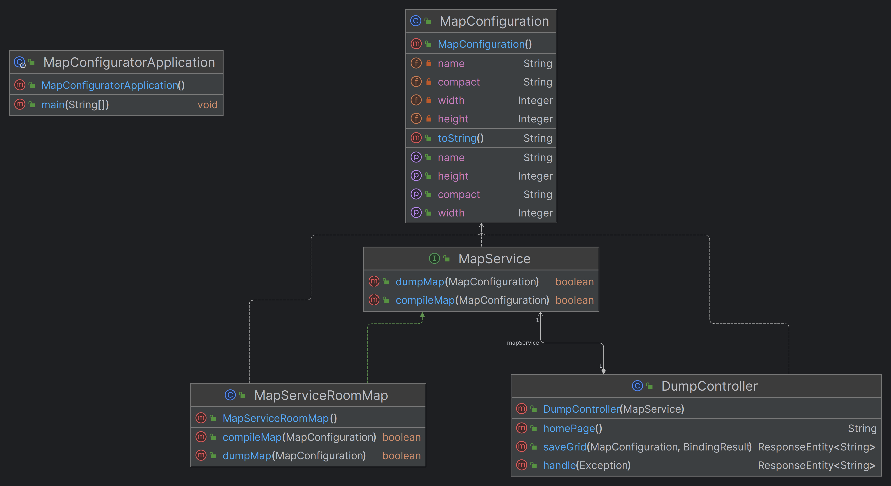

Introduction
Requirements
Requirement analysis
Problem analysis
Test plans
Project
MapConfigurator
MapConfigurator è una applicazione grafica web che permette a un utente di creare una configurazione per la disposizione dei punti di interesse nella service area.
Come per la ServiceAccessGUISim utilizziamo il framework Spring Boot.


Le feature principali dell'applicazione includono:
- blocchi trascinabili: la griglia viene compilata trascinando i blocchi che rappresentano i landmark con una funzionalità di drag and drop;
- griglia ridimensionabile: è possibile ridimensionare la griglia tramite gli slider in alto, la dimensione di default è quella individuata utilizzando
unibo.mapperQak23 - persistenza: l'utente troverà la configurazione creata salvata tra sessioni, permettendo di riprendere la modifica dove era stata lasciata
- utilizzo intuitivo: l'applicazione deve essere semplice da utilizzare nascondendo i dettagli della rappresentazione utilizzata dal planner
I blocchi trascinati sulla mappa vengono considerati come esplorati e, nel caso del blocco della ColdRoom marcati come ostacoli nella rappresentazione sotto forma di unibo.planner23.model.RoomMap.
Questa applicazione è completa nel rispetto delle funzionalità di base che abbiamo considerato necessarie; è possibile, tuttavia, che in futuro venga estesa con feature di utilità aggiuntive.
Diagramma delle classi
Infine, si riporta il diagramma UML delle classi dell'applicazione.
